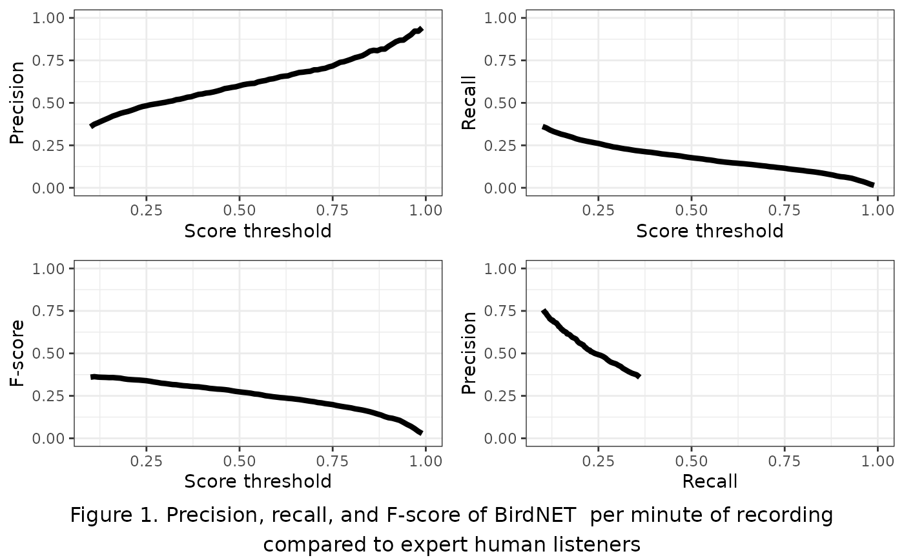
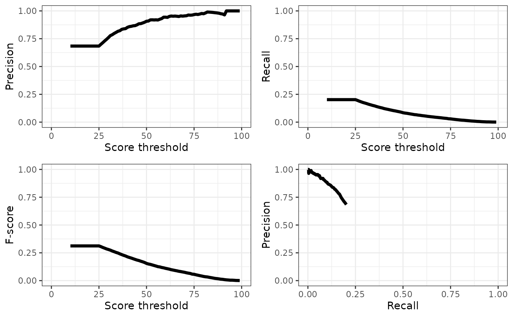
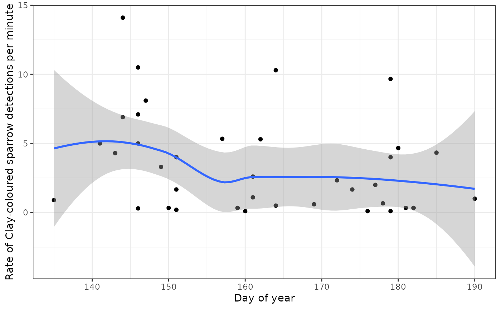

Acoustic classifiers
classifiers-tutorial.RmdDeep learning in acoustic processing
Recent advances in deep learning have led to the development of neural network models that can classify the sounds within acoustic recordings, such as those captured by autonomous recording units (ARUs). These classifiers can be trained to detect just a single focal species, or to classify thousands of species. The process of using automated classifiers to extract species detections from acoustic recordings is collectively called “computer listening”. This tutorial will show you how to access and work with classifier results for recordings in WildTrax.
BirdNET
BirdNET is a deep learning classifier developed by the Cornell Lab of Ornithology that is trained to classify more than 6,000 of the world’s most common bird species, including most North American bird species @kahl_2022. The model converts audio recordings into windows of spectrograms and outputs a probability score for each species in each one.
Classifier performance
Classifier scores can be converted to species detections by setting a threshold (e.g., 0.8) above which to consider a species present within a given spectrogram @wood_2024. False positives can still occur at high score thresholds, so often verification by a human observer is still necessary.
Choosing a score threshold will depend on the goals of the project; however, threshold choice is a trade-off between false positives (i.e., incorrect classifications) and false negatives (i.e., missed detections; @priyadarshani_2018, @knight_2017). Choosing a high score threshold will minimize false positives, but will also result in false negatives. Choosing a low score threshold will minimize false negatives but will result in many false positives. The proportion of false positives at a given score threshold is typically measured by precision:
While the proportion of false negatives is measured as recall:
Where tp is the number of true positives, fp is the number of false positives, and fn is the number of false negatives.
The threshold-agnostic performance of a classifier is then typically evaluated as the area under the curve (AUC) of a precision-recall curve. The corner of the precision recall curve can be used to select a score threshold.
F-score is a combination of precision and recall and can also used to select a score threshold by selecting the peak value.
BirdNET performance for Canadian birds
ABMI has evaluated BirdNET with a dataset of 623 3-minute recordings. All species were annotated in each minute of each recording by our top expert listeners and further groomed for false positives and negatives. The dataset was selected to include at least 10 recordings with detections of the most common 203 Canadian bird species. Recordings were primarily sourced from Alberta and Ontario to include variation in dialect. We evaluated BirdNET by running it using the local eBird occurrence data for each recording and comparing results with our expert dataset and pooling the total detections across species per minute of recording to calculate overall precision, recall, and F-score.
Precision ranged from 0.36 at a score threshold of 0.10 to 0.94 at a score threshold of 0.99 (Figure 1). Recall ranged from 0.01 at a score threshold of 0.99 to 0.36 of 0.1 F-score was similarly low, ranging from 0.03 at a score threshold of 0.01 to 0.36 at a score threshold of 0.99. Neither the precision-recall curve nor the plot of F-score relative to score threshold showed a typical concave down curve shape, suggesting that a low score threshold of 0.10 would be best to optimize trade-offs between precision and recall.

Deep learning in WildTrax
WildTrax uses BirdNET to automatically classify species in all recordings that are uploaded to projects, with the classifier run overnight once the task is uploaded. The sensitivity is set at 1.5 to reduce the probability of false positives and the score threshold is set low at 0.1 to allow users to set higher thresholds as needed. The list of species is filtered by eBird occurrence data for the week of recording, but not by location.
Downloading the classifier reports
Use wt_download_report(reports = c('main','birdnet')) to
download the BirdNET report and the main report for further analysis.
We’ll use the ABMI Ecosystem Health 2022 dataset as an example.
library(wildrtrax)
Sys.setenv(WT_USERNAME = 'guest', WT_PASSWORD = 'Apple123')
wt_auth()
#This line will take a minute to run while it downloads the data
data <- wt_download_report(project_id = 1144,
sensor_id = "ARU",
reports = c("main", "birdnet"),
weather_cols = FALSE)Evaluating
We can combine the main report and the BirdNET report to evaluate the
classifier’s performance on a given dataset. The
wt_evaluate_classifier() function takes the output from the
wt_download_report() and joins them together and then
calculates precision, recall, and F-score for the requested sequences of
thresholds. You can request the metrics at the minute level for
recordings that are processed with the species per minute method (1SPM).
You can also exclude species that are not allowed in the project from
the BirdNET results before evaluation.
eval <- wt_evaluate_classifier(data,
resolution = "task",
remove_species = TRUE,
thresholds = c(10, 99))
tail(eval, 5)## # A tibble: 5 × 4
## precision recall fscore threshold
## <dbl> <dbl> <dbl> <dbl>
## 1 1 0.00200 0.00399 95
## 2 1 0.00150 0.00299 96
## 3 1 0.000833 0.00166 97
## 4 1 0.000666 0.00133 98
## 5 1 0.000333 0.000666 99We can plot the results of our evaluation to get an idea of how BirdNET is performing:
plot.p.e <- ggplot(eval) +
geom_line(aes(x=threshold, y=precision), size=1.5) +
xlab("Score threshold") +
ylab("Precision") +
xlim(0,100) +
ylim(0,1) +
theme_bw()
plot.r.e <- ggplot(eval) +
geom_line(aes(x=threshold, y=recall), size=1.5) +
xlab("Score threshold") +
ylab("Recall") +
xlim(0,100) +
ylim(0,1) +
theme_bw()
plot.f.e <- ggplot(eval) +
geom_line(aes(x=threshold, y=fscore), size=1.5) +
xlab("Score threshold") +
ylab("F-score") +
xlim(0,100) +
ylim(0,1) +
theme_bw()
plot.pr.e <- ggplot(eval) +
geom_line(aes(x=recall, y=precision), size=1.5) +
xlab("Recall") +
ylab("Precision") +
xlim(0,1) +
ylim(0,1) +
theme_bw()
library(gridExtra)
grid.arrange(plot.p.e, plot.r.e, plot.f.e, plot.pr.e, ncol=2)
Selecting and filtering a threshold
You can use the precision and recall values in the output of the
wt_evaluate_classifier() function to select a score
threshold manually, or you can use the wt_get_threshold()
function to select the highest threshold that maximizes F-score.
threshold_use <- wt_get_threshold(eval) |>
print()## [1] 26Once a threshold has been selected, the BirdNET report can be filtered:
## # A tibble: 6 × 16
## organization location location_id project project_id recording_date_time
## <chr> <chr> <dbl> <chr> <dbl> <dttm>
## 1 ABMI 1004-NE 310673 Ecosystem He… 1144 2022-03-31 07:45:00
## 2 ABMI 1004-NE 310673 Ecosystem He… 1144 2022-03-31 07:45:00
## 3 ABMI 1004-NE 310673 Ecosystem He… 1144 2022-03-31 07:45:00
## 4 ABMI 1004-NE 310673 Ecosystem He… 1144 2022-03-31 07:45:00
## 5 ABMI 1004-NE 310673 Ecosystem He… 1144 2022-03-31 07:45:00
## 6 ABMI 1004-NE 310673 Ecosystem He… 1144 2022-03-31 07:45:00
## # ℹ 10 more variables: recording_id <dbl>, recording_length <dbl>,
## # scientific_name <chr>, species_common_name <chr>, species_code <chr>,
## # start_s <dbl>, end_s <dbl>, confidence <dbl>,
## # is_species_allowed_in_project <lgl>, version <chr>Whether you’re a human or a computer, all classifiers make mistakes. But we can select a score threshold that maximizes the F-score. Let’s look at what our precision is:
eval[eval$threshold==threshold_use,]## # A tibble: 1 × 4
## precision recall fscore threshold
## <dbl> <dbl> <dbl> <dbl>
## 1 0.699 0.196 0.306 26A precision at our chosen score threshold of approximately
round(eval[eval$threshold==threshold_use,]$precision,3)
means that ~1/3 of detections are likely still false positives, we
should probably visually verify to remove those false positives. Given
that the overall recall rate of BirdNET is < 10% for precision values
above 0.7, the detections should be used with caution in ecological
analyses. From a detectability perspective, a recall rate of 10% means
that your detection probability with BirdNET is 10% of what it would be
with a human listener.
Check for additional species detected
One of the potential valuable applications of BirdNET is to check for the presence of additional species in acoustic recordings that were not detected by human listeners. @ware_2023 found that supplementing human listener data with verified computer listening results improved estimates of species richness, particularly for water-associated birds.
We can use the wt_additional_species() function to check
for species reported by BirdNET that the human listeners did not detect
in our project. The input for this function should be the output from
the wt_download_report() function when you request the
main and birdnet reports and you will need to
set a score threshold.
Let’s use a high threshold (80) on our example dataset to see if any new species are detected. We can use the resolution argument to specify whether we want to look for new species in each task, recording, location, or in the entire project. Let’s pretend we’re interested in site-specific species richness and use the task argument.
new <- wt_additional_species(data, remove_species = TRUE, threshold = 80, resolution="task")
#potential new detections
nrow(new)## [1] 3
table(new$species_code)##
## AMWI BOOW EVGR
## 1 1 1There are unique(new$species_code) potential new species
detections in our dataset.
If no human-generated tags exist in a project, in other words you are
only using classifiers to detect species, additional tags can be easily
synchronized with wt_additional_tags(format_to_tags = TRUE)
along with an output folder. If you are adding additional tags to a
human processed data set, the best approach is sync the tags onto new
tasks. Generate tasks with the ‘Not Assigned’ observer and then sync the
output of wt_additional_tags(). The common error you may
encounter are when there are either conflicts for the number of
individuals assigned relative to the task method.
Individual calls
Another potential use for BirdNET in WildTrax is to use it to detect individual calls as opposed to just the first call in each task (1SPT) or minute (1SPM). This might be of interest if you’re using call rate in a behavioural analysis, or if you’re looking for detections for tool development like distance estimation or building a focal species recognizer. Let’s try it for Clay-coloured Sparrow (CCSP):
#Evaluate classifier performance
eval_ccsp <- wt_evaluate_classifier(data,
resolution = "task",
remove_species = TRUE,
species = "CCSP",
thresholds = c(10, 99))
#Filter the detections to the best threshold
threshold_ccsp <- wt_get_threshold(eval_ccsp)
#Look at performance at that threshold
eval_ccsp[eval_ccsp$threshold==threshold_ccsp,]## # A tibble: 1 × 4
## precision recall fscore threshold
## <dbl> <dbl> <dbl> <dbl>
## 1 1 0.446 0.617 25
#Filter to detections
detections_ccsp <- data[[1]] |>
filter(species_code == "CCSP",
confidence > threshold_ccsp)As before, you’ll probably want to upload your detections to WildTrax for verification, even though BirdNET performance for Clay-coloured Sparrow is pretty good. Let’s take a look at our BirdNET output as call rate to see if it’s higher at the beginning of the season, as we would expect:
library(lubridate)
#Calculate detections per second and mean confidence in each recording
rate_ccsp <- detections_ccsp |>
group_by(location_id, recording_date_time, recording_length) |>
summarize(calls = n(),
confidence = mean(confidence),
.groups = "keep") |>
ungroup() |>
mutate(rate = calls/recording_length*60,
recording_date_time = ymd_hms(recording_date_time),
yday = yday(recording_date_time),
hour = hour(recording_date_time))
#Filter to the sites with most recordings with detections
occupied_ccsp <- rate_ccsp |>
group_by(location_id) |>
mutate(recordings = n()) |>
ungroup() |>
dplyr::filter(recordings >= 4)
#Plot call rate by day of year
ggplot(occupied_ccsp) +
geom_point(aes(x=yday, y=rate)) +
geom_smooth(aes(x=yday, y=rate)) +
xlab("Day of year") +
ylab("Rate of Clay-coloured sparrow detections per minute") +
theme_bw()
Other applications
Visit the BirdNET Github repository to run BirdNET on your own computer. The decision to pursue other applications should be made with the effect of BirdNET’s low recall rate in mind:
With presence / absence data, BirdNET is unlikely to be reliably to confirm absences due to the low recall.
BirdNET data can be used for occupancy modelling (@wood_2023), and there are approaches that can accommodate false positive error rates to preclude verification of all detections (@rhinehart_2022). However, users should keep in mind that occupancy modelling is recommended only for detection probabilities > 30% and that recall from BirdNET may be too low for reliable occupancy estimates for many species (@knight_2017).
See @perez-granados_2023 for a full review of BirdNET applications and performance.